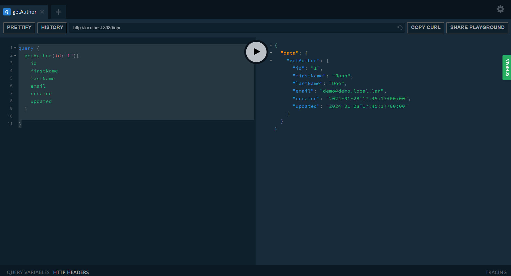
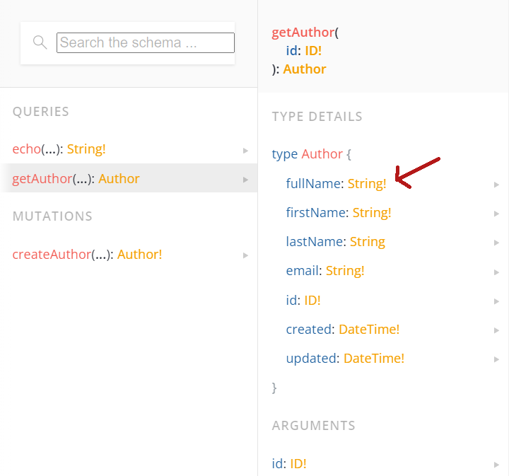
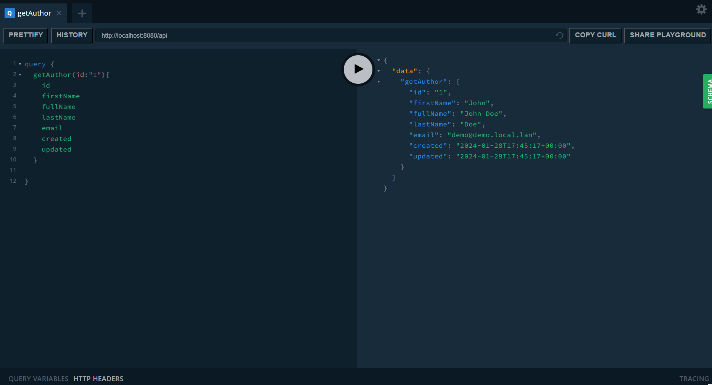
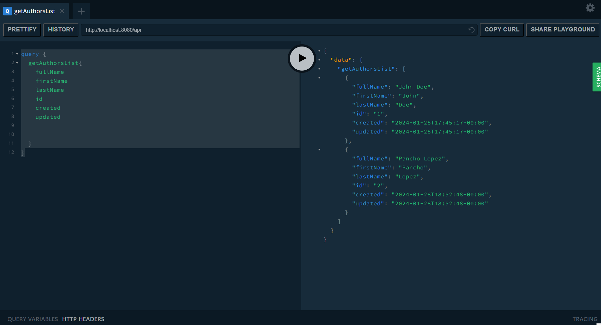
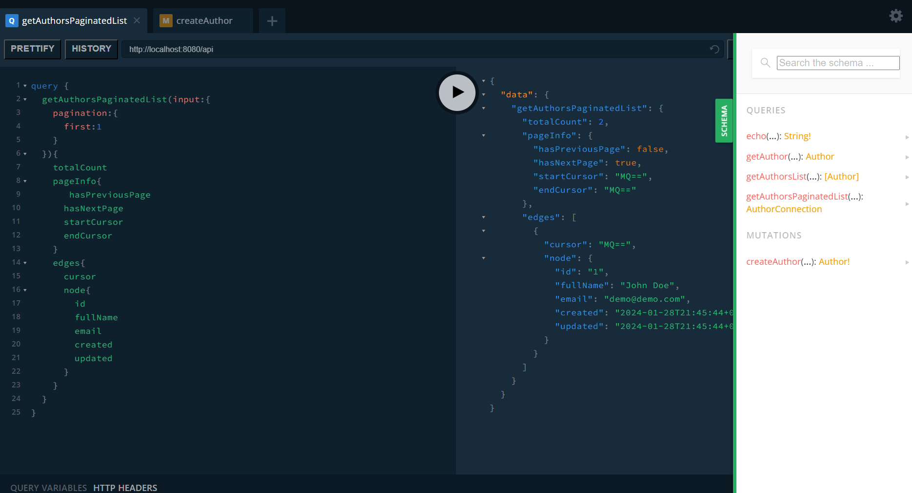

GQLPDSS Quick Start
Propósito
Construir una api graphql para un blog
Funcionalidad
- CRUD Autores
- CRUD Post
- CRUD Comentarios
Requisitos
- PHP versión 7.4 o superior
- PHP Composer
- Conexión a base de datos MySQL
Crear proyecto
composer create-project wappcode/gql-pdss-skeleton my-project Configuración de la Base de Datos
Antes de comenzar, asegúrate de tener MySQL configurado y crea una base de datos para tu aplicación.
Crear el Archivo de Configuración de Doctrine
Crea un archivo llamado config/doctrine.local.php y agrega el siguiente
código:
<?php return [ 'driver' => [ 'user' => 'root',
'password' => 'rootpassword', 'driver' =>
'pdo_mysql', 'host' => 'localhost', 'dbname' =>
'', 'charset' => 'utf8mb4' ], 'entities' =>
require __DIR__ . '/doctrine.entities.php' ];
Asegúrate de reemplazar los siguientes valores con la información correspondiente a tu servidor de base de datos:
- 'user': El nombre de usuario de tu base de datos.
- 'password': La contraseña de tu base de datos.
- 'host': La dirección del servidor de la base de datos.
- 'dbname': El nombre de la base de datos que has creado.
Si estás utilizando una base de datos que no sea MySQL, ajusta el valor de 'driver' según corresponda.
Permisos de Escritura para la Carpeta "data"
Para asegurar el correcto funcionamiento de la aplicación, es importante otorgar permisos de escritura a la carpeta "data". A continuación, se detallan los pasos para hacerlo en diferentes sistemas operativos:
Linux:
En sistemas Linux, puedes usar el comando chmod para cambiar los permisos de la carpeta
"data" y otorgar permisos de escritura. Abre tu terminal y ejecuta el siguiente comando:
chmod a+w dataEsto permitirá que cualquier usuario en el sistema pueda escribir en la carpeta "data".
Windows:
En sistemas Windows, puedes cambiar los permisos de la carpeta "data" a través de la interfaz gráfica del explorador de archivos:
- Navega hasta la carpeta "data".
- Haz clic derecho sobre la carpeta y selecciona "Propiedades".
- Ve a la pestaña "Seguridad".
- Haz clic en "Editar" y luego en "Agregar".
- Escribe "Todos" en el campo de nombres de objetos y haz clic en "Comprobar nombres".
- Haz clic en "Aceptar" para cerrar la ventana de selección de usuarios.
- Selecciona el usuario "Todos" en la lista de nombres de grupos o usuarios y marca la casilla "Control total" en la columna "Permitir".
- Haz clic en "Aplicar" y luego en "Aceptar" para aplicar los cambios.
Esto otorgará permisos de escritura a todos los usuarios en la carpeta "data".
macOS:
En macOS, puedes usar el comando chmod de manera similar a como se hace en Linux. Abre
la Terminal y ejecuta el siguiente comando:
chmod a+w dataEsto permitirá que cualquier usuario en el sistema pueda escribir en la carpeta "data".
Recuerda en entornos de producción aplicar las mejores prácticas de seguridad y otorgar permisos solo a los grupos y usuarios relevantes.
Crear Entidad Author (Autor)
Para definir una entidad Doctrine que represente un autor, crea un nuevo archivo Author.php
en la siguiente ubicación: modules/AppModule/src/Entities/Author.php y agrega el siguiente
código:
<?php namespace AppModule\Entities; use Doctrine\ORM\Mapping as ORM; use
GPDCore\Entities\AbstractEntityModel; class Author extends AbstractEntityModel{
/** * * @ORM\Column(type="string", length=255, nullable=false,
name="first_name") * @var string */ private $firstName; /** *
@ORM\Column(type="string", length=255, nullable=true, name="last_name") * *
@var ?string */ private $lastName; /** * @ORM\Column(type="string", length=255,
nullable=false, name="email") * * @var string */ private $email; /** * Get the value
of firstName * * @return string */ public function getFirstName()
{
return $this->firstName;
}
/** * Set the value of firstName * * @param string $firstName * * @return self */ public
function setFirstName(string $firstName)
{
$this->firstName = $firstName; return $this;
}
/** * Get the value of lastName * * @return ?string */ public function getLastName()
{
return $this->lastName;
}
/** * Set the value of lastName * * @param ?string $lastName * * @return self */ public function
setLastName(?string $lastName)
{
$this->lastName = $lastName; return $this;
}
/** * Get the value of email * * @return string */ public function getEmail()
{
return $this->email;
}
/** * Set the value of email * * @param string $email * * @return self */ public function
setEmail(string $email)
{
$this->email = $email; return $this;
} } La clase Author es una entidad Doctrine que utiliza anotaciones para definir sus
columnas en la base de datos. Esta clase extiende la clase AbstractEntityModel, la
cual agrega las propiedades id (clave primaria), created y
updated.
Los métodos get se utilizan para generar los campos tipo objeto GraphQL. Para que funcionen
correctamente, estos métodos deben ser públicos y tener un tipo de retorno asignado.
Los métodos set se utilizan para generar los tipos de entrada de GraphQL. Deben ser
públicos y tener asignado un tipo requerido.
Para generar el código SQL necesario para actualizar la base de datos, ejecuta el siguiente comando en la terminal:
vendor/bin/doctrine orm:schema-tool:update --dump-sqlPara aplicar los cambios en la base de datos, utiliza el siguiente comando:
vendor/bin/doctrine orm:schema-tool:update --forceRegistrar un Campo GraphQL para Crear Autores
Para registrar un campo GraphQL que permita la creación de autores, es necesario crear la clase AppModule
para que extienda la clase GPDCore\Library\AbstractModule e implemente los siguientes
métodos:
use GPDCore\Library\AbstractModule; use GPDCore\Graphql\GPDFieldFactory; use
AppModule\Entities\Author; class AppModule extends AbstractModule
{
// Otros métodos y propiedades de la clase AppModule public function getConfig(): array
{
// Implementación para obtener la configuración de la aplicación
}
public function getServicesAndGQLTypes(): array
{
// Implementación para obtener los servicios y tipos GraphQL de la aplicación
}
public function getResolvers(): array
{
// Implementación para obtener los resolutores de la aplicación
}
public function getQueryFields(): array
{
// Implementación para obtener los campos de consulta GraphQL de la aplicación
}
public function getMutationFields(): array
{
return [ 'createAuthor' => GPDFieldFactory::buildFieldCreate($this->context, Author::class)
];
} } Con estos cambios, la clase AppModule estará completamente configurada para registrar
un campo GraphQL que permita la creación de autores en tu aplicación PHP.
En el array devuelto por el método getMutationFields, se agrega un campo GraphQL.
La clave de este campo corresponde al nombre que se utilizará en las consultas GraphQL. El valor
asociado a esta clave es un objeto GraphQL creado mediante la clase GPDFieldFactory
utilizando el método buildFieldCreate.
Crear un Autor mediante Consulta GraphQL
Para probar la creación de un autor, la URL de la API depende de la configuración del servidor y
generalmente apunta al archivo principal en la ruta public/index.php/api.
Por ejemplo, en un servidor Apache: http://localhost/my-project/public/index.php/api
También puedes iniciar un servidor PHP desde el directorio de la aplicación con el siguiente comando:
php -S localhost:8000 public/index.phpDe esta manera, la URL sería: http://localhost:8080/api
Para realizar la prueba, puedes utilizar una extensión de GraphQL para tu navegador o Postman.
La consulta GraphQL a ejecutar es la siguiente:
mutation {
createAuthor(input: {
firstName: "John", lastName: "Doe", email: "demo@demo.local.lan"
}) {
id firstName lastName email created updated
} } Con la extensión GraphQL Playground para Chrome, puedes ejecutar la consulta y visualizar los resultados directamente en el navegador.
Al ejecutar la consulta, se guardará un nuevo registro en la base de datos. Los campos id, created y updated son generados automáticamente.
Registrar un Campo GraphQL para Recuperar el Registro de un Autor por ID
Para registrar un campo GraphQL que recupere el registro de un autor por su ID, actualiza el
método getQueryFields en el archivo
modules/AppModule/src/AppModule.php de la siguiente manera:
function getQueryFields(): array
{
return [ 'getAuthor' => GPDFieldFactory::buildFieldItem($this->context, Author::class),
];
} Para probar la obtención del autor por ID, ejecuta el siguiente query en la extensión de Chrome GraphQL Playground:
query {
getAuthor(id: "1") {
id firstName lastName email created updated
} } 
Para hacer más útil la consulta del autor, podemos agregar el nombre completo (fullName). Para ello, primero registramos un método getFullName en la clase
Author:
/** * Obtiene el nombre completo. * * @return string */ public function getFullName()
{
return $this->firstName . " " . $this->lastName ?? "";
} Con esto, podemos recuperar el nombre completo de un autor desde la clase Author en
PHP, y la propiedad fullName queda registrada en el esquema de GraphQL.

Para que funcione correctamente, es necesario agregar un resolver en la clase Author
para fullName. Actualiza el método getResolvers en el archivo
modules/AppModule/src/AppModule.php de la siguiente forma:
function getResolvers(): array
{
return [ 'Author::fullName' => function($root, $args, $context, $info) {
return $root["firstName"] . " " . $root["lastName"] ?? '';
}
];
} Es importante que la clave del array esté compuesta por el nombre de la clase seguido de dos
veces dos puntos (::) y el nombre de la propiedad, en este caso,
Author::fullName.
Ahora puedes realizar la consulta solicitando el valor de fullName.

Registrar un Campo GraphQL para Recuperar la Lista de Autores Registrados
Para obtener la lista de autores registrados, actualiza el método getQueryFields en
el archivo modules/AppModule/src/AppModule.php de la siguiente manera:
function getQueryFields(): array
{
return [ 'getAuthor' => GPDFieldFactory::buildFieldItem($this->context, Author::class),
'getAuthorsList' => GPDFieldFactory::buildFieldList($this->context, Author::class),
];
} Ahora puedes realizar consultas GraphQL para recuperar todos los autores registrados.
Antes de realizar la prueba, puedes crear más autores utilizando la entrada createAuthor para poder visualizar mejor el resultado.
Para probar, ejecuta el siguiente query en la extensión GraphQL:
query {
getAuthorsList {
fullName firstName lastName id created updated
} } 
La consulta getAuthorsList ya incluye opciones para ordenar y filtrar. Por ejemplo,
para filtrar los resultados por nombre, puedes ejecutar la siguiente consulta:
query {
getAuthorsList(filter: [
{
conditions: [
{
filterOperator: LIKE, value: {
single: "%john%"
}, property: "firstName"
}
]
}
]) {
fullName firstName lastName id created updated
} } Y para ordenar por nombre, puedes ejecutar el siguiente query:
query {
getAuthorsList(sorting: [
{
property: "firstName", direction: desc
}
]) {
fullName firstName lastName id created updated
} } NOTA: Puedes utilizar filtros y orden en la misma consulta.
Registrar un Campo GraphQL para Recuperar la Lista Paginada de Autores
Antes de agregar la entrada para consultar la lista paginada, es necesario registrar los tipos connection
y Edge para el tipo de dato que se va a consultar, en este caso
Author.
En la carpeta modules/AppModule/src/Graphql, crea el archivo
AuthorEdgeFactory.php con el siguiente código:
<?php namespace AppModule\Graphql; use GPDCore\Library\AbstractEdgeTypeServiceFactory; class
AuthorEdgeFactory extends AbstractEdgeTypeServiceFactory {
const NAME = 'AuthorEdge'; const DESCRIPTION = ''; protected static $instance = null;
} Esta clase extiende a AbstractEdgeTypeServiceFactory, que tiene los métodos
necesarios para construir el objeto GraphQL AuthorEdge.
La constante NAME corresponde al nombre del objeto GraphQL que se va a crear y no
debe contener caracteres especiales ni espacios en blanco. La constante DESCRIPTION
corresponde a la descripción del objeto GraphQL que se va a crear. La propiedad estática
$instance es importante porque es donde se almacenará la instancia del objeto GraphQL
una vez que se haya creado, de esta forma solo se creará un solo objeto de este tipo; las siguientes
solicitudes para obtener el objeto retornarán el objeto creado previamente.
Todos los objetos GraphQL deben ser registrados como servicios. Para crear y registrar como
servicio el objeto AuthorEdge, actualiza el método
getServicesAndGQLTypes
de la clase AppModule en el archivo
modules/AppModule/src/AppModule.php de la siguiente forma:
function getServicesAndGQLTypes(): array
{
return [ 'invokables' => [], 'factories' => [ AuthorEdgeFactory::NAME =>
AuthorEdgeFactory::getFactory($this->context, Author::class) ], 'aliases' => [] ];
} En el array factories, se agrega la clave con el nombre del nuevo objeto (AuthorEdgeFactory::NAME), y como valor se agrega el retorno del método AuthorEdgeFactory::getFactory con
los parámetros de contexto ($this->context) y la clase de la entidad relacionada (Author::class).
Para el objeto AuthorConnection, se realiza un proceso similar:
En la carpeta modules/AppModule/src/Graphql, crea el archivo
AuthorConnectionFactory.php con el siguiente código:
<?php namespace AppModule\Graphql; use GPDCore\Library\AbstractConnectionTypeServiceFactory;
class AuthorConnectionFactory extends AbstractConnectionTypeServiceFactory {
const NAME = 'AuthorConnection'; const DESCRIPTION = ''; protected static $instance = null;
} Las constantes NAME, DESCRIPTION y $instance tienen la
misma funcionalidad que en AuthorEdgeFactory.
Se agrega como servicio en la clase AppModule:
function getServicesAndGQLTypes(): array
{
return [ 'invokables' => [], 'factories' => [ AuthorEdgeFactory::NAME =>
AuthorEdgeFactory::getFactory($this->context, Author::class), AuthorConnectionFactory::NAME =>
AuthorConnectionFactory::getFactory($this->context, AuthorEdgeFactory::NAME) ] ];
} Para este caso, a AuthorConnectionFactory::getFactory se le pasan las propiedades
de contexto y el nombre del objeto Edge relacionado, en este caso
AuthorEdgeFactory::NAME
("AuthorEdge").
Siempre es importante recordar que para importar otras clases es necesario agregar los
namespaces al inicio del archivo. Por ejemplo, en el archivo AppModule, después de
la línea namespace AppModule;, se agregan las líneas:
use AppModule\Graphql\AuthorConnectionFactory; use AppModule\Graphql\AuthorEdgeFactory;
Una vez creados los tipos AuthorEdge y AuthorConnection, se puede
actualizar el método getQueryFields de la clase AppModule para agregar
la consulta paginada:
function getQueryFields(): array
{
$authorConnection =
$this->context->getServiceManager()->get(AuthorConnectionFactory::NAME); return [
'echo' => [ 'type' => Type::nonNull(Type::string()), 'args'
=> [ 'message' => Type::nonNull(Type::string()) ], 'resolve' =>
function ($root, $args) <CodeBlockOpenChar /> return $args["message"];
<CodeBlockEndChar /> ], 'getAuthor' =>
GPDFieldFactory::buildFieldItem($this->context, Author::class), 'getAuthorsList'
=> GPDFieldFactory::buildFieldList($this->context, Author::class),
'getAuthorsPaginatedList' =>
GPDFieldFactory::buildFieldConnection($this->context, $authorConnection, Author::class), ];
} El código
$authorConnection =
$this->context->getServiceManager()->get(AuthorConnectionFactory::NAME);
recupera el objeto GraphQL AuthorConnection desde el administrador de servicios y la
línea
'getAuthorsPaginatedList' =>
GPDFieldFactory::buildFieldConnection($this->context, $authorConnection, Author::class),
es donde se agrega la entrada para consultar autores de forma paginada.
Para probarlo, se puede ejecutar el siguiente query:
query {
pagination {
first: 1
} } 
En este caso, se utiliza el input para recuperar las primeras n registros. El resultado
contiene la siguiente información:
totalCount: Total de elementos.pageInfo: Información de la página.edges: En la propiedadnodes, se encuentran los datos de los registros consultados.
Al igual que la consulta de listas, se tiene la opción para filtrar y ordenar los elementos.
Registrar un campo graphql para actualizar autores.
En el archivo modules/AppModule/src/AppModule.php actuallizar el método getMutationFields para agregar la entrada 'updateAuthor' de la siguiente forma.
function getMutationFields(): array
{
return [ 'createAuthor' => GPDFieldFactory::buildFieldCreate($this->context, Author::class),
'updateAuthor' => GPDFieldFactory::buildFieldUpdate($this->context, Author::class),
];
} Probar funcionamiento: En la extensión del navegador para graphql ejecutar la siguiente consulta
mutation UpdateAuthor{
updateAuthor(id:"1", input:{
email: "Email Actualizado"
}){
id fullName email
} } Para las actualizaciones los inputs son parciales lo que significa que se puede actualizar ya sea todos o solo algunos de datos del registro
Registrar un campo graphql para eliminar autores.
En el archivo modules/AppModule/src/AppModule.php actuallizar el método getMutationFields para agregar la entrada deleteAuthorde la siguiente forma.
function getMutationFields(): array
{
return [ 'createAuthor' => GPDFieldFactory::buildFieldCreate($this->context, Author::class),
'updateAuthor' => GPDFieldFactory::buildFieldUpdate($this->context, Author::class),
'deleteAuthor' => GPDFieldFactory::buildFieldDelete($this->context, Author::class)
];
} Probar funcionamiento: En la extensión del navegador para graphql ejecutar el siguiente código
mutation DeleteAuthor{
deleteAuthor(id:"1")
} Como resultado la consulta retorna un valor boolean (falso o verdadero) indicando si se realizó correctamente la operación.
Crear registro para POST
Crear archivo Post.php para la entidad en la siguiente ubicación modules/AppModule/src/Entities/Post.php
<?php // modules/AppModule/src/Entities/Post.php namespace AppModule\Entities; use
Doctrine\ORM\Mapping as ORM; use AppModule\Entities\Author; use
GPDCore\Entities\AbstractEntityModel; /** * @ORM\Entity * @ORM\Table(name="posts") */
class Post extends AbstractEntityModel
{
/** * * @ORM\Column(type="string", length=255, nullable=false, name="title")
* @var string */ private $title; /** * @ORM\Column(type="text", nullable=false, name="body")
* @var string */ private $body; /** * @ORM\ManyToOne(targetEntity="\AppModule\Entities\Author",
inversedBy="posts") * @ORM\JoinColumn(name="author_id", referencedColumnName="id",
nullable=false) * @var Author */ private $author; /** * Get the value of title * * @return string
*/ public function getTitle()
{
return $this->title;
}
/** * Set the value of title * * @param string $title * * @return self */ public function
setTitle(string $title)
{
$this->title = $title; return $this;
}
/** * Get the value of body * * @return string */ public function getBody()
{
return $this->body;
}
/** * Set the value of body * * @param string $body * * @return self */ public function
setBody(string $body)
{
$this->body = $body; return $this;
}
/** * Get the value of author * * @return Author */ public function getAuthor()
{
return $this->author;
}
/** * Set the value of author * * @param Author $author * * @return self */ public function
setAuthor(Author $author)
{
$this->author = $author; return $this;
} Se agrega a la clase Author la referencia a los posts
/** * * @ORM\OneToMany(targetEntity="\AppModule\Entities\Post",
mappedBy="author") * @var Collection */ private $posts; /** * Get the value of posts *
* @return Collection */ public function getPosts(): Collection
{
return $this->posts;
}
/** * Set the value of posts * @API\Exclude * @param Collection $posts * * @return self */
public function setPosts(Collection $posts)
{
$this->posts = $posts; return $this;
} Como no vamos a crear post desde el registro de autores se agrega a la función setPost la anotación @API\Exclude para que ese método no sea considerado para definir el input de la clase Author.
Es necesario agregar use GraphQL\Doctrine\Annotation as API; en la parte superior de
la página para que se incluyan los archivos correspondientes
Se ejecuta el comando para actualizar la base de datos
vendor/bin/doctrine orm:schema-tool:update --force Se agregan en AppModule las entradas para CRUD para Post
Crear clase Edge para post
<?php namespace AppModule\Graphql; use GPDCore\Library\AbstractEdgeTypeServiceFactory; class
PostEdgeFactory extends AbstractEdgeTypeServiceFactory
{
const NAME = 'PostEdge'; const DESCRIPTION = '' protected static $instance =
null;
} Crear clase Connection para post
<?php namespace AppModule\Graphql; use GPDCore\Library\AbstractConnectionTypeServiceFactory;
class PostConnectionFactory extends AbstractConnectionTypeServiceFactory <CodeBlockOpenChar
/> const NAME = 'PostConnection'; const DESCRIPTION = ''; protected
static $instance = null; <CodeBlockEndChar /> Registrar los tipos en ServiceManager en el
método getServicesAndGQLTypes de la clase AppModule function getServicesAndGQLTypes():
array <CodeBlockOpenChar /> return [ 'invokables' => [],
'factories' => [ AuthorEdgeFactory::NAME =>
AuthorEdgeFactory::getFactory($this->context, Author::class), AuthorConnectionFactory::NAME
=> AuthorConnectionFactory::getFactory($this->context, AuthorEdgeFactory::NAME),
PostEdgeFactory::NAME => PostEdgeFactory::getFactory($this->context, Post::class),
PostConnectionFactory::NAME => PostConnectionFactory::getFactory($this->context,
PostEdgeFactory::NAME) ], ];
}
Importarlos con
use AppModule\Graphql\PostConnectionFactory; use AppModule\Graphql\PostEdgeFactory;
Agregar las entradas graphql para ver los registros en el método getQueryFields de la clase AppModule
function getQueryFields(): array
{
$authorConnection =
$this->context->getServiceManager()->get(AuthorConnectionFactory::NAME);
$postConnection =
$this->context->getServiceManager()->get(PostConnectionFactory::NAME); return [
'getAuthor' => GPDFieldFactory::buildFieldItem($this->context, Author::class),
'getAuthorsList' => GPDFieldFactory::buildFieldList($this->context,
Author::class), 'getAuthorsPaginatedList' =>
GPDFieldFactory::buildFieldConnection($this->context, $authorConnection, Author::class),
'getPost' => GPDFieldFactory::buildFieldItem($this->context, Post::class),
'getPostsList' => GPDFieldFactory::buildFieldList($this->context, Post::class),
'getPostsPaginatedList' => GPDFieldFactory::buildFieldConnection($this->context,
$postConnection, Post::class), ];
} Agregar las entradas graphql para crear, actualizar y eliminar los registros en el método getMutationFields de la clase AppModule
function getMutationFields(): array
{
return [ 'createAuthor' => GPDFieldFactory::buildFieldCreate($this->context, Author::class),
'updateAuthor' => GPDFieldFactory::buildFieldUpdate($this->context, Author::class),
'deleteAuthor' => GPDFieldFactory::buildFieldDelete($this->context, Author::class),
'createPost' => GPDFieldFactory::buildFieldCreate($this->context, Post::class), 'updatePost'
=> GPDFieldFactory::buildFieldUpdate($this->context, Post::class), 'deletePost' =>
GPDFieldFactory::buildFieldDelete($this->context, Post::class) ];
} Crear resolver para obtener los datos del autor desde el post
Se crea la clase PostResolversFactory en la carpeta modules/AppModule/src/Graphql
<?php namespace AppModule\Graphql; use AppModule\Entities\Author; use
GPDCore\Library\EntityBuffer; use GPDCore\Library\ResolverFactory; class PostResolversFactory
{
public static function getAuthorResolver()
{
$entityBuffer = new EntityBuffer(Author::class); $resolver = ResolverFactory::createEntityResolver($entityBuffer,
'author'); return $resolver;
} } El método ResolverFactory::createEntityResolver recibe dos parámetros el primero es
un objeto tipo EntityBuffer que se encarga de optimizar la consulta para obtener los datos de autores
de todos los post relacionados en una sola consulta (ver n+1 problem)
El segundo parámetro corresponde al nombre de la propiedad "author" de la entidad Post
Se registra el resolver en el método getResolvers de la clase AppModule
function getResolvers(): array
{
return [ 'Author::fullName' => function ($root, $args, $context, $info) {
return $root["firstName"] . " " . $root["lastName"] ?? '';
}, 'Post::author' => PostResolversFactory::getAuthorResolver()
];
} Crear resolver para obtener los datos de los post desde el autor
<?php namespace AppModule\Graphql; use AppModule\Entities\Author; use
AppModule\Entities\Post; use GPDCore\Library\ResolverFactory; class AuthorResolversFactory
{
public static function getPostResolver()
{
$resolver = ResolverFactory::createCollectionResolver(Author::class, 'posts', null, Post::class);
return $resolver;
} } En este caso, se utiliza ResolverFactory::createCollectionResolver porque se recupera
una lista de elementos en lugar de solo uno. Es importante destacar que cada registro de autor recupera
una lista de objetos Post.
Los parámetros de esta función son:
- El nombre de la clase u objeto principal Author::class
- El nombre de la propiedad que tiene los elemento relacionados (“post”)
- La lista de relaciones ManyToOne o OneToOne de la entidad principal (opcional)
- La clase relacionada con la propiedad de los elementos relacionados que se van a consultar “Post::class” (opcional)
Los últimos 2 parámetros son opcionales pero para el correcto funcionamiento es necesario asignar uno de ellos, se recomienda poner null en el tercer parámetro y asignar valor al último parámetro.
Se agrega el resolver a la función getResolvers de la clase AppModule
function getResolvers(): array
{
return [ 'Author::fullName' => function ($root, $args, $context, $info) {
return $root["firstName"] . " " . $root["lastName"] ?? '';
{, 'Post::author' => PostResolversFactory::getAuthorResolver(),
'Author::posts' => AuthorResolversFactory::getPostResolver() ];
{ Para organizar mejor el código se puede pasar la funcionalidad del resolver Author::fullName a un método de la clase AuthorResolversFactory
<?php namespace AppModule\Graphql; use AppModule\Entities\Author; use
AppModule\Entities\Post; use GPDCore\Library\ResolverFactory; class AuthorResolversFactory
{
public static function getPostResolver()
{
$resolver = ResolverFactory::createCollectionResolver(Author::class, 'posts', null, Post::class);
return $resolver;
}
public static function getFullnameResolver(): callable
{
return function ($root, $args, $context, $info) {
return $root["firstName"] . " " . $root["lastName"] ?? '';
};
} } Y se actualiza en AppModule
function getResolvers(): array
{
return [ 'Post::author' => PostResolversFactory::getAuthorResolver(), 'Author::posts'
=> AuthorResolversFactory::getPostResolver(), 'Author::fullName' => AuthorResolversFactory::getFullnameResolver(),
];
} Con todas estas configuraciones establecidas, ahora podemos utilizar la API para realizar una variedad de acciones con respecto a los posts: visualizar, crear, actualizar y eliminar.
Además, es posible obtener los datos del autor mediante una consulta del post.